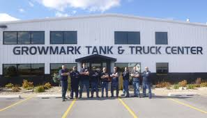

My Projects
Redbook Project(USA):
MBA AVIATION
This Ruby on Rails 7 application is designed to efficiently manage and analyze flight records, which involve handling large volumes of data. The system is built to process flight data, calculate future values, and visually represent this information through interactive graphs
Growmark Tankspotter
Tankspotter

This Ruby on Rails application follows the Model-View-Controller (MVC) architectural pattern to effectively manage gas tanks and their associated metrics, including gas volume and tank temperature. The system is designed to provide users with a comprehensive interface for monitoring and analyzing gas tank data.